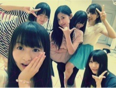

| 2012/07 12 Thu | 175回目*marika |
いつも読んでくださってる方、
初めて読んでくださった方、
コメントしてくださった方、
ありがとうございます‼
こんばんは

ボイトレわず！

わず←使ってみたかった
ボイトレ前に髪ちょと切って
さらさらにしたった

久しぶりに美容院行ったから
メンバーに
「髪切ってん！さらさらになってん！
どう？どう⁇」
と自慢してみたが、
「え、わからんかった」
とさくっと言われ、
「...(´･_･`)」
まーりっか
 ←←
←←
←←
*****
昨日ね、ママが二階で
ミシンをかたかた
鳴らしてたんだけどね、
何作ってるのかと思ったら...

クッションカバー作ってたみたい

かわいすぎるわーーーーーー
やっばいわーーーーーーー
こんなのいっぱいあるから
家がカラフル 笑
*****
大阪全握のレーン発表されたね

みゅうみゅうと一緒‼
うれしいっっっ絶対楽しい♪
ねっ‼みゅうみゅう
 ←
←
←
そんなわけで大阪楽しみやなー

あ、自己紹介のコール＆レスポンス
説明なしで
まりっかは～⁇
ってふるから
ぜひね、
＼どうがーーーん／
って叫んでください。
恥ずかしがらず、
叫んじゃってください。
よろしくお願いします

*****
久しぶりに質問回答しますったい

............
仲良しのねねちゃん、ここだけは
直したほうがいいなーと思うところ
ってある？逆にねねちゃんから、
何か、ここだけは直したほうが
いいよっていわれたことある？
 いや、特にない‼
いや、特にない‼
というか、そのままでいい。
ねねにもそのままがいいって
言われるよ^^
ただ、冗談っぽく「落ち着け」
って言われる笑
本当、伊藤ちゃんずのやりとりを
みなさんに見せれるようになりたい...
まだまだみなさんに伊藤ちゃんずを
出し切れてないから

ピーマン嫌いな人は嫌いですかぁ？
嫌いなら私が
ピーマン食べてあげる
にやり
にやり
そんなことで嫌いにならんて、
好きやって‼
...あ
 //
//
//
好きなキャラクターとかある？？
ディズニーだったら
モンスターズインクとか
バンビとかダンボとかすきです

でもそんなキャラクターに
こだわってません。
最近気になってるアーティストいる？
家入レオさん‼
まりかって記憶力は良い方？
むー、、
ど忘れすることはよくアル
 あかんな
あかんな
あかんな
べびたんはテスト勉強は
テストがある前日に慌ててやる？
それとも毎日コツコツやる？
今回は慌ててやってしまったx(
毎日コツコツ...できるように頑張る。
べびたんはテスト終わったら
自分へのご褒美をあげる予定ある？
今日ちょっと買い物してきた

アクセサリーとか買いました。
まりっかは晴れ女と雨女どっち？
ワシは晴れ女だと思うけど？
おおーう‼晴れ女だったら
うれしいがね...わからんぬ

まりかが参考にしている
ファッション雑誌教えて
装苑とか。
あと、いろんな雑誌立ち読み笑
ダジャレ好き？嫌い？
ダジャレ思いついたら
言ってしまうんだが...
これって好きだからなのかしら

...............

今日もまひろとはしゃいだ

では明日も頑張りまりか
 ☆
☆
☆
まりか
コメント(137)
2012/07/12 21:06